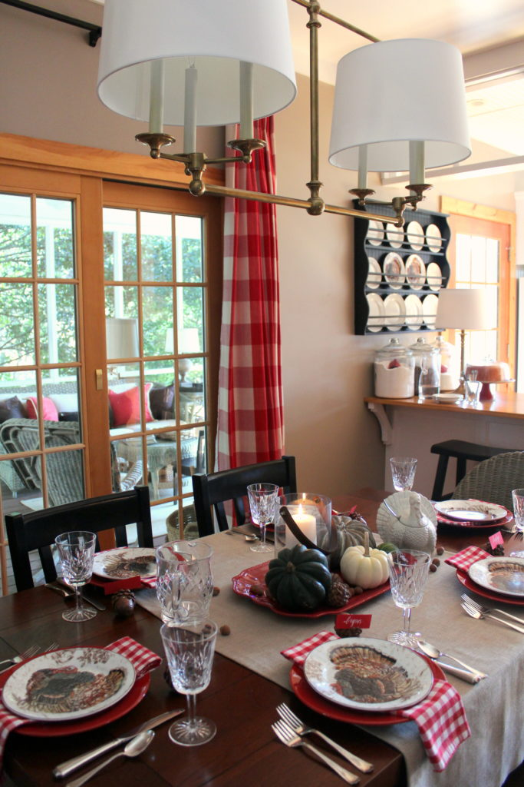
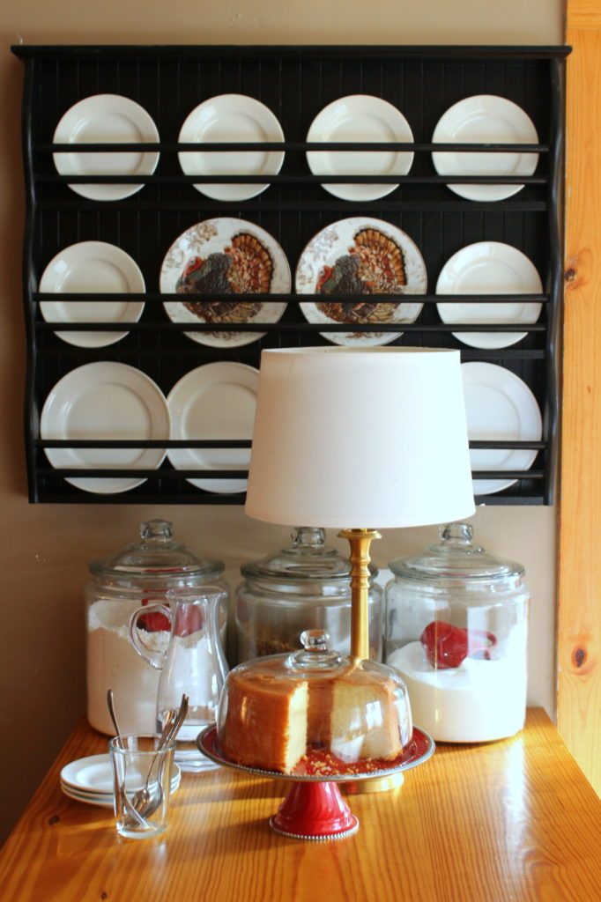

.png)
.PNG)
.PNG)
.PNG)
.PNG)
.PNG)
.JPG)
.JPG)
.PNG)
.PNG)


Happy Thanksgiving, and welcome back for part 2 of our little tour! I’m guessing you are in the middle of your to-do list for Thursday’s big dinner, so thank you for taking time out of your busy schedule to stop in for a visit here today. 🙂

As we prep all the food and get things ready for this meal, I can’t help but think of the countless Thanksgiving dinners I’ve enjoyed in the past. Growing up, our family never traveled “over the river and through the woods” to any relative’s home for the holiday. It was always Thanksgiving with just my parents and my siblings at our home.

My brother and sister and I would wake early to the smell of a turkey roasting in the oven. (Heaven only knows what time my mother got started in the kitchen on that day!) We would watch the Thanksgiving Day parades on television, and then my father would take us children outside to rake leaves in the yard. I am guessing part of the thinking behind this was to keep us out of our mother’s way in the kitchen. Smart man.

Our home sat in the first row of a large pecan orchard, so there were a lot of leaves to get up. We would all rake them into large piles, and then we’d rake those piles onto big white bed sheets (yes really!)

Once the sheet had a pile my father deemed substantial enough, one of us would grip one end of the sheet with my father grasping the other, and we’d haul them to dump into the flower beds for mulch.

I’m sure along the way there were episodes of “jump in the leaf pile” with one of our beagles much like the scene from A Charlie Brown Thanksgiving.

We’d take a break at lunch to go inside for the big meal my mother had single-handedly prepared. We’d sit in the formal dining room with the olive green carpet. My father would say grace, thanking God for our many blessings, and then we’d eat with the real silver, dining off green flowery bordered Noritake china, the Princeton pattern if I remember correctly.

There was always turkey and dressing, ambrosia, deviled eggs, that wiggly jellied cranberry sauce, (that kept its perfect shape as it slid out of its can) a green bean casserole with the crunchy onion topping, celery sticks stuffed with pimento cheese, (my favorite!) and a sweet potato casserole with that toasted marshmallow topping that we all fought over. For dessert, we would have pecan pie with shelled pecans from our orchard, made from the recipe on the back of the Karo syrup bottle.

There were probably other dishes as well, but they don’t stand out in my memory like these do. I’m always amazed to think that my mom was able to serve all of those dishes out of her one little oven. Just think how many of those things had to be baked!

And then after stuffing ourselves silly it was time for….watching football on tv? Nope. Back to raking of course! It was the Thanksgiving tradition! (I’m sure that’s what the Pilgrims and Native Americans did when they finished their feast, right? 🙂 )

And this tradition has continued for many many years. Even through college, when I would come home from good ol’ GSC (now GSU) for the holiday break, we would eat the traditional turkey and dressing meal and rake the yard on Thanksgiving Day.

Then I married, and I attended my first Thanksgiving with my husband’s family…quite a different affair. His family has a BIG reunion with scads of aunts, uncles, and assorted cousins enjoying their meal….60+ people (rather overwhelming for a young bride!)

But good grief at the food! It has always been “organized potluck” with specific dishes requested each year…my mother-in-law’s turkey and dressing, Janna’s sweet potato souffle, Lee’s green bean and corn casserole, an aunt’s ambrosia, and many many many more! I always bring my raspberry ribbon salad (recipe here.) (And we all playfully fight over the corner piece of Wanda’s caramel cake. 🙂 )

And in addition to all these family gatherings, I remember 30 years of school Thanksgiving dinners.

Each year on the Thursday before the Thanksgiving break, all the schools in the county have a “holiday meal.” (That’s what it’s called on the menu.) In the elementary schools this was always a big deal.

Yards and yards of bulletin board paper would be rolled out to cover the tables. In the art classes, centerpieces would be created from construction paper, perhaps toilet paper rolls, and even the proverbial pine cone.

The lower grades would create Native American head dresses and vests or Pilgrim caps and collars. (It’s amazing what you can do with construction paper, scissors, and glue!)

And everyone would design paper placemats to use at their spot so that they didn’t get anything on the paper “tablecloths.” This was a big deal because not only would other classes sit where you sat as the lunch rotation went through the cafeteria, but PARENTS were invited to this meal as well…and you sure didn’t want to leave a mess where a parent might possibly sit!

Some schools turned off the lights and lit candles for this meal. Heaven help us if the fire marshall ever showed up! We would have had a major “paper overuse” violation with an open flame on top of that! But it would have been worth the write up. When the excited children, all dressed in their paper costumes, came through that lunchroom door and saw all the decorations, their eyes would widen in awe. They would point at the tables and just take it all in. It was a big deal. 🙂

And of course the wonderful lunch ladies prepared turkey and dressing (the recipe of which my mother-in-law still uses today!) On top of that delicious dressing would be a tiny white paper cup holding a spoonful of cranberry sauce, most of which none of the students would touch. But there would always be one or two children in each class who would ask the kids around them, “Are you going to eat your cranberry sauce?” And before you know it, they would have 7 or 8 of those cups of it in their possession!

Years ago, those “holiday meals” included a scoop of sweet potato casserole with that yummy marshmallow topping, but I think that has been abandoned through the years with school lunchrooms having to be more mindful of nutrition. Some years there would be ambrosia made with oranges, coconut, and maraschino cherries, and other years would have an apple and raisin salad. There would be those big amazing yeast rolls and a square of cake – maybe spice, maybe vanilla with a coconut frosting, or perhaps vanilla with a chocolate frosting.

Many of the children would have parents come and dine with them. I would always sit with the ones that had no guests so that they would have “somebody.” And year after year, there would always be a child who would quietly ask me if they could wrap up their serving of cake to take home to a grandparent because “they would love it.” So we would carefully wrap it in a paper napkin, put it in a ziplock bag when we got back to the classroom, and they would take it home in their bookbag at the end of the day (along with an extra piece or two I retrieved from the sweet lunch ladies.)

Soooo many Thanksgivings to remember…and so much to be thankful for…family, friends, good health, a safe place to call home. Our law school son will travel with friends to Montreal, and our Seattle son will be celebrating a Friendsgiving with his 4 new housemates and a group of friends. I am sad our boys won’t be here this year, but I am thankful they each have friends with which to celebrate.

We’ll be splitting the day between families and having one meal here. I set up both the porch and dining room for you to see. I would like to dine on the porch (just look at that view!) but I think it will be too cool, and we’ll have to eat in the dining room. We won’t be raking leaves at my parents’ home because I have “mowed” their leaves, and the yard is clean!
Now I’m off to finish my to-do list. There is a raspberry ribbon salad to make and bunches of turnips to wash and oranges to peel (all while listening to Christmas music. 🙂 ) Enjoy your day tomorrow! Whether you are having a Thanksgiving meal with a small group, a big family reunion, or joining in a Friendsgiving someplace, I hope you have a very blessed day…remembering all that you are thankful for. I count you as one of my blessings!
Until next time…
(when there will be Christmas decorations!)


.PNG)
Hi Kelly, sorry I’m a little late commenting. Such a beautifully written post. Thanks for sharing all your Thanksgiving memories …I can picture them so clearly.
Safe travels on your journey to Vermont. Have fun and take care.
Rosemary
Catching up with your posts: made me a little teary to read your school lunch remembrances. We did our family meal on Thanksgiving Eve – so on the actual day – was just me and the hubs. I didn’t rake but used the blower to pile up some leaves, and then put up my Christmas tree – quite a chore since it’s all of 3 feet tall. LOL We did enjoy some tasty leftovers and a couple of naps – so I was thankful for that day for sure. It’s just my immediate family now – all the parents and grandparents, etc.. – are gone. So we are a smaller group but still enthusiastic for the food. Can’t wait to see your Christmas Decor.
I hope you had a lovely Thanksgiving, Kelly. Thank you for your lovely posts. We were traveling the weekend prior & I had lots of catch-up to do upon arrival home. I am so glad to see someone else prepares a turnips dish for their Thanksgiving meal. Your posts are always inspiring.
So sweet of you to share your precious memories – as warm and inviting as your home.
I LOVED this post! It made me miss school for a skinny second. LOL! Do you have the “lunch ladies dressing” recipe? Every year I try to duplicate it. This year was the closest but I still don’t have it down. (I knew you would be the kind of teacher who would sit with the children without parents at the Thanksgiving school lunch.) I love hearing traditions like yours of raking leaves and pecan pie. I remember Thanksgivings with my grandparents and lots of cousins. One uncle always scared me into thinking if they didn’t shoot a turkey that morning we wouldn’t have Thanksgiving dinner. I still try to include foods my grandmother made…the lime salad that only I eat and my nephew says “doesn’t look like a salad to me”. My grandmother made the prettiest cakes right out of Good Housekeeping. The Christmas Parade in High Point was on Thanksgiving Day and it seemed like the coldest day of the year watching and waiting for Santa. In high school I was a majorette and absolutely FROZE in that skimpy uniform marching in the parade. I am thankful for warm Thanksgivings now. Your blog inspires me more than any other. I bought red plates to put under my turkey plates and have switched over to a Christmas salad plate now. I can’t wait for more blog posts!!!
Love, love, love pimento cheese stuffed celery sticks. Didn’t know anyone else liked it as much. 🙂
Hi Kelly: I love your decor, but also enjoyed so much hearing about your Thanksgiving memories! I can really relate to your memories of those elementary “holiday meals.” It makes me happy to see a post from you!
I loved seeing your Thanksgiving decorations and tablescapes….so pretty and creative!! Hope you and your family enjoyed a wonderful Thanksgiving together! Can’t wait to see your Christmas decor…
Aww, I loved reading your Thanksgiving memories. I could just imagine those children in the lunchroom asking for the cranberry sauce. 😀 Love your beautiful view from your porch!!I’m kinda jealous. I have a mountain behind mine. :O
Your raspberry ribbon salad sounds just like my mother’s side dish only her’s is made with lemon and lime jello and has walnuts instead of pecans, with a few mandarin oranges thrown in too. Unfortunately, we never found a good name for this dish and have always just referred to it as “the Mold” as in Jello made in a mold. So its a hard sell for the younger generation🤗I think i have to change it now to Lemony Ribbon Salad and I’ll pick up a few customers. Thx for the lovely post and Happy Holidays.🎄🦃
Thank you so much for sharing your sweet memories. Especially your school memories, I just retired this year and miss the students with their pilgrim and Indian attire! Happy Thanksgiving
This post brings so many memories to mind. What fun we had with all the costumes and food. I love reading your posts; you have such a gift with words. Hope your Thanksgiving was wonderful and I’m looking forward to your Christmas decorations.
Always a pleasure. Hope your Thanksgiving was wonderful. Blessings to you and your family.
Wonderful setting and wonderful story to accompany this grateful holiday- thank you Kelly,
I tried to teach a grandchild that very song this morning. She has an hour drive to my house and very rural countryside. So it was ” Over the river and through the woods…” Lol. You have been a blessing in my life. Thank you!
First – Happy Thanksgiving!
Now, my comments.
I was so entranced with your words, I read them first, then went back to look at your as always,awesomely decorated home! Many of your comments hit home with me; the kids not being with you, the first Thanksgiving with the in laws family, the childhood family, and most of all the school lunch. Growing up, I always enjoyed that special lunch, because it made me feel especially loved, and a part of the whole, more than any other day of school. I was a “free lunch” kid, and often felt sensitive about that fact. I felt judged, even if no one said a word. I knew, and that was just another way I felt different. But that special lunch day, I didn’t feel different, because we were all having the same meal, and were all, somehow, a big family.
Thank you for stopping to share these memories with us. And now…I must go and get that dinner in the oven!
Hi Kelly, Once again you made my day! Your memories are so much like mine. We must have been raised by the same parents!…..Today I turned 77yr and I can remember grade school like it was yesterday……I have pics of my paper pilgrim costume…..can’t get to it right now as we are in the process of moving to our new property…..house to be built this next Spring…..your house is such a nice inspiration too! I too am so Thankful to God for His many blessings down through the years!
Thank you for your post!
Joyce
I’m thankful for you Kelly~blessings, Julia
Thanks for a lovely trip down memory lane for me. As my siblings and I got older, my family stayed home for Thanksgiving. Mom would get up at an ungodly hour to put the bird in the oven. As we helped with the prep, we were always watching the Macy’s Thanksgiving Day Parade. We especially loved the performance by the Rockettes. To this day, my daughter calls from her home in NY to remind me in Florida to turn on the TV to watch the festivities. This year, she has a new young daughter who will be watching the parade with her tomorrow. It will make me feel good just to think about this holiday tradition being passed on to a new generation. May you and your family have a safe and happy Thanksgiving day. We all have so much for which we are thankful this year.
I was just reminiscing with my cousin today about Holidays past that we used to celebrate together. Your table looks lovely. Happy Thanksgiving…let the feasting begin! 😉
Kelly, I enjoyed hearing about all of your Thanksgiving memories. We all have so much to be thankful for. I am thankful for your precious blog. Thank you for sharing your gifts of decorating with all of us. You are so talented. God’s blessings to your families during Thanksgiving. So blessed to have you as a friend.
What a sweet story about your cafeteria when you were teaching. I cannot imagine how hard it is to see some sadness among the festivities, but I’m glad you were there for them. Our school cafeteria in the mid-50’s to 60’s had a wonderful woman in charge called Mrs. Beasley. I remember very little about my teachers, but can picture Mrs. Beasley’s face oh so many years later! Thanks for reminding me of these sweet memories.
This is such a heart warming post. It brought back memories of Thanksgivings past for me. At my parents home, the ladies cleaned up everything after the feast while the men watched football. And I remember what an exciting time the Thanksgiving Feast at school was. Thank you for taking the time to share this post with your readers on this very busy day. Have a wonderful Thanksgiving!
Oh, you brought back my memories of the first grade Thanksgiving lunches we held for sixteen years. Students dressed as Pilgrims and Indians thanks to our art teacher. After thirty-two years hosting Thanksgiving dinners at our home, I told my daughter it’s her turn. Therefore, we have dinner reservations at 1:30 for her family, her in-laws, and us. Small steps, ha, ha.
Wishing you and yours a blessed Thanksgiving. Eager to read and see your house decked out for Christmas. So happy you are finding some time to post your blog. Really missed you.
What a lovely post, Kelly, it’s so nice to get this background into your life! My parents are from Ireland so Thanksgiving was not as big of a deal to us growing up, not until my sister took over the holiday once she got married. Christmas is a bigger holiday in Ireland, so that was always quite the celebration and I have wonderful memories of Christmas as a child! Have a very happy Thanksgiving….and I’m so glad you no longer have to rake those leaves!! 🙂
I loved reading your memories…thanks for sharing.
Your home is so serene and lovely, too.
Happiest of Thanksgiving to You and Yours!
Such a beautiful post. We all have so much to be grateful for. Happy Thanksgiving to you and your family.
In addition to your many other talents…. you are an excellent writer. Love reading about your Thanksgivings. I can relate to so many of your traditions. Happy Thanksgiving and as always…thankful for you too. 🍂🏈🦃
So fun remembering Thanksgivings through the years and like yours, ours have changed over time, but always a special time with family and friends. Wishing you and your beautiful family a wonderful holiday!
Have a wonderful Thanksgiving. So love hearing about your Thanksgiving memories. So similar to mine. I always wondered how my Grandmother could do it all in her kitchen. Everything was so delicious! I can smell it now. Blessing to you and your family.
I so enjoyed reading this post …. brings back so many wonderful memories of much the same as you….. ( Except for the leaves … lolol) … My daughter is a school teacher and so I still get to enjoy some of those wonderful Holiday dinners and decorating with her and the grands at their school !!! Happy Thanksgiving
Kelly, I cried sweet tears of remembrance as I read your post. As a retired teacher, I pictured many years of Thanksgiving lunches lovingly prepared by school lunch ladies. Recent lunches with grandchildren are added to my memories. Their lunch ladies still use some of the old recipes! Large family dinners have been replaced with just our small gathering with our two daughters and their families, but we still carry on traditions of cookie turkeys with candy corn tail feathers, pine cone turkey placecards, and dishes prepared from family recipes. Thank you so much for sharing this post with us. I am always so pleased to see one of your posts in my inbox. Happy Thanksgiving!
Such wonderful stories shared, Kelly, thank you! Happy Thanksgiving!
It is so wonderful to see you posting your holiday splendor and think everything you do is so special and done with such love! When counting blessings, you are right in there on my list – the joy and happiness you’ve shared over the years has been a great inspiration to me and we love your thoughtful design sense!
Know this is off topic, but hope you were able to read the new Mitford book – “To Be Where You Are”. LOVED it to the nth degree and of course, there were a few puddles of tears as Jan captured the life and times of this special place. Really felt like it was set up to continue the story further which thrilled me to the nth degree. I reread the entire series again and reveled in the simple joys that it shares. Gratitude always rings true in Mitford. And having two little children being such a part of the story was pure delight! Oh, the joy of it all!!!
And much gratitude is felt for you and yours – thank you again for all you share and inspire! Hugs from the Rockies, Pippa
Kelly,
Thanks for sharing! I count you as a blessing as well! Happy Thanksgiving!
Dawn
Wow! We had to rake leaves, too, on Thanksgiving. I thought we were the only ones. We ate in the middle of the day so we got to start after Thanksgiving dinner so that we could watch the Parade in the morning. Thanks for sharing your memories. Love your beautiful home all dressed up for the holiday.
I loved reading your memories. Very similar to mine, even the school memories..just not the raking of the leaves. I visited your neck of the woods this past August. I picked up our newest Springer Spaniel from Lanewood Kennels. The area was so pretty with all the pecan trees. I really want to come back one day and go to downtown Perry. I lived in Columbus twice in my life, but never made it to central Georgia. It is so pretty and your view from the porch is lovely.
Have a great Thanksgiving.